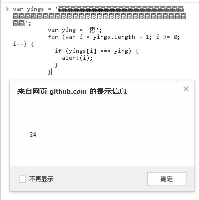

1.入门的同学还是要把讲义的代码手敲一下，建立感觉。长的代码可以到 jsbin.com 上面敲，看下输出结果。同时也改一下变量，换一下代码顺序，看看输出结果有什么不同。
2.给定一个整数，当它可以被 7 整除或被 9 整除或同时能被 7 和 9 整除时，输出相应提示信息。（声明一个变量，赋予不同的值，看输出结果）
3.变量 var day = new Date().getDay()，写一个 switch 或 if ...else 语句，根据 day 的值在工作日输出 ‘上班’，周六日输出 ‘玩耍’。
4.编程找出字符串 "赢赢赢赢赢赢赢赢赢赢赢赢赢赢赢赢赢赢赢赢赢赢赢赢嬴赢赢赢赢赢赢赢赢赢赢赢赢赢赢赢赢赢赢赢赢赢赢赢赢赢赢赢" 中 "嬴" 的下标
